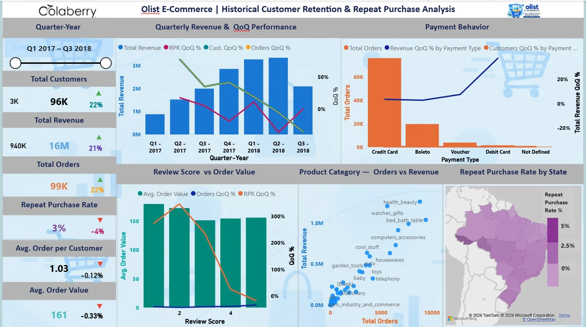

Projects / Olist retention analysis
Olist customer retention and repeat purchase analysis
A Power BI report that shows how many Olist customers order again, and how revenue and orders move quarter by quarter.

The question
A marketplace grows by adding customers, but it earns more when customers come back. This report asks how many Olist customers place another order, how that changes from quarter to quarter, and which payment types, review scores, product categories and states sit behind the numbers.
What the report answers
- How revenue, orders and customers change from one quarter to the next.
- What the repeat purchase rate is, and whether it is moving.
- How payment type, review score, product category and state relate to orders and revenue.
Data and tools
The report uses the Olist Brazilian e-commerce data for orders from Q1 2017 to Q3 2018. Across that period it covers about 96K customers, 99K orders and 16M in revenue.
It is built in Power BI on a connected data model, with DAX measures for repeat purchases, retention, revenue and quarter-over-quarter trends.
- Customers
- 96K
- Orders
- 99K
- Revenue
- 16M
- Repeat purchase rate
- 3%
What is on the page
- A quarter slicer from Q1 2017 to Q3 2018 filters every visual, and clicking a bar cross-filters the rest of the page.
- A KPI column shows total customers, revenue, orders, repeat purchase rate, average orders per customer and average order value, each with a change indicator.
- Quarterly revenue and QoQ performance uses columns for revenue and lines for the quarter-over-quarter change in repeat purchase rate, customers and orders.
- Payment behavior compares orders by payment type: credit card, boleto, voucher, debit card and not defined.
- Review score versus order value shows average order value at each review score.
- Product category plots orders against revenue for each category.
- Repeat purchase rate by state shades a map of Brazil.
Checking the numbers
A dedicated validation page, Validation Table, is used to check the results. It collects validation measures such as Total Orders QoQ % Validation and Repeat Purchase Rate QoQ % Validation, which also appear in tooltips on the dashboard, so the figures on the visuals can be checked as you explore. Everything shown is historical actuals, not predicted values.
Challenge and solution
Challenge. Turning a complex e-commerce dataset into reliable historical customer-retention insights while avoiding the use of predicted values as actual results.
Solution. Built a connected data model and DAX measures for repeat purchases, retention, revenue, and QoQ trends, then validated the results through a dedicated validation page.
What the report shows
- Quarterly revenue rises from Q1 2017 to a peak in Q2 2018.
- Credit card carries most orders, followed by boleto.
- The repeat purchase rate is low, about 3% for the full period, so retention is the open question.
- Health and beauty, watches and gifts, and bed and bath are among the highest-revenue categories.
Potential benefits
These are potential benefits of the design. They are not measured results.
- Retention sits next to revenue and orders, so it is read as a KPI and not as an afterthought.
- The quarter slicer and cross-filtering let a reader test a question without asking for a new report.
- Validation measures give a reviewer a way to trust the numbers.